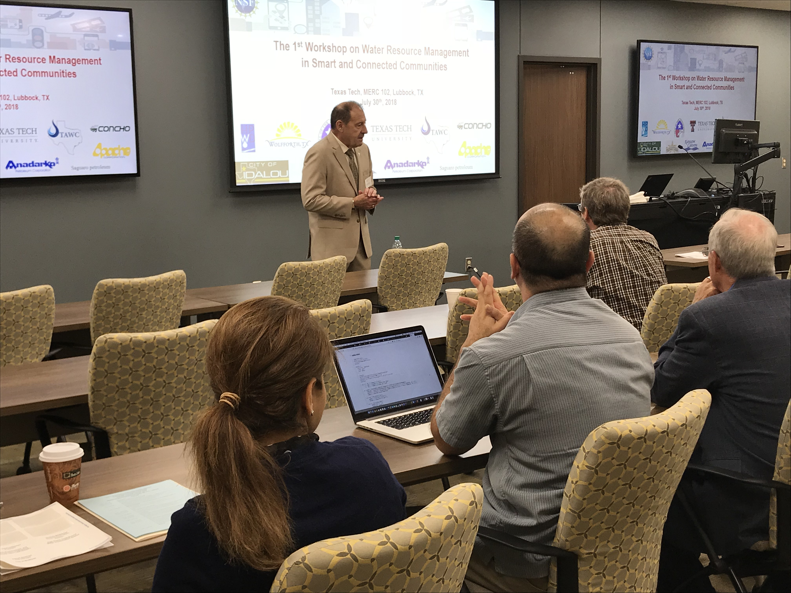
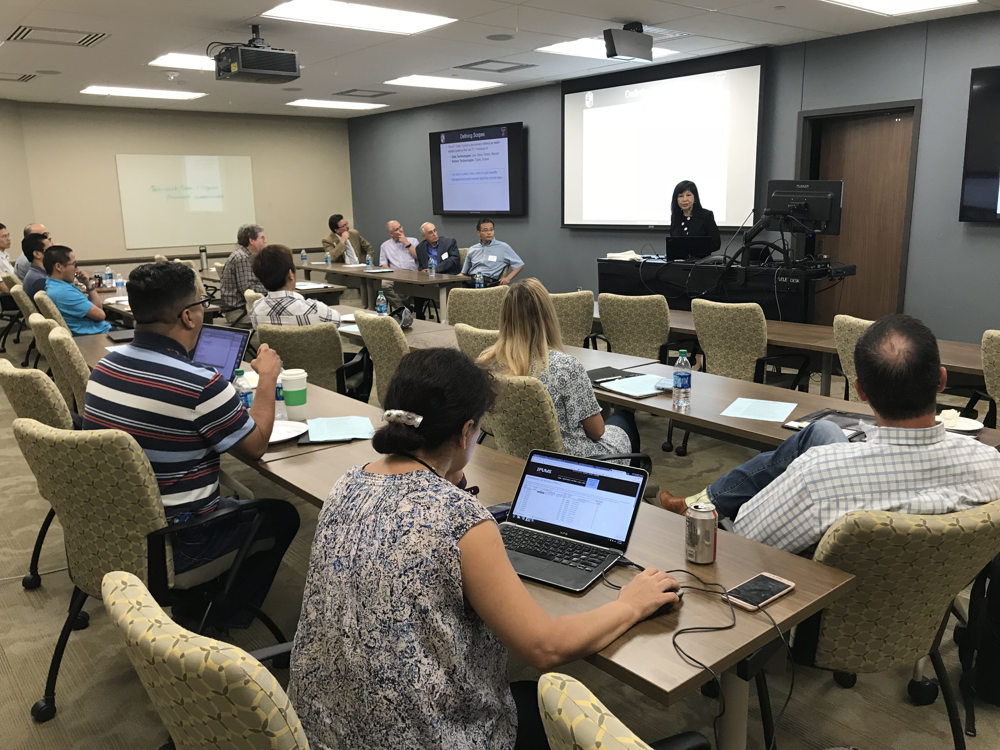
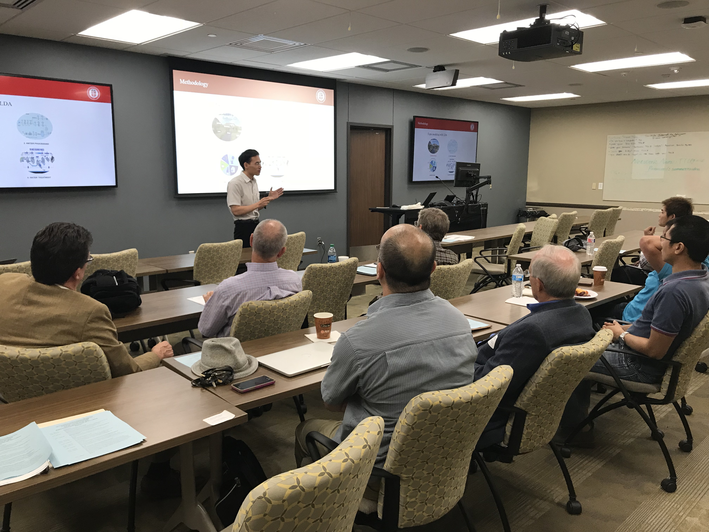
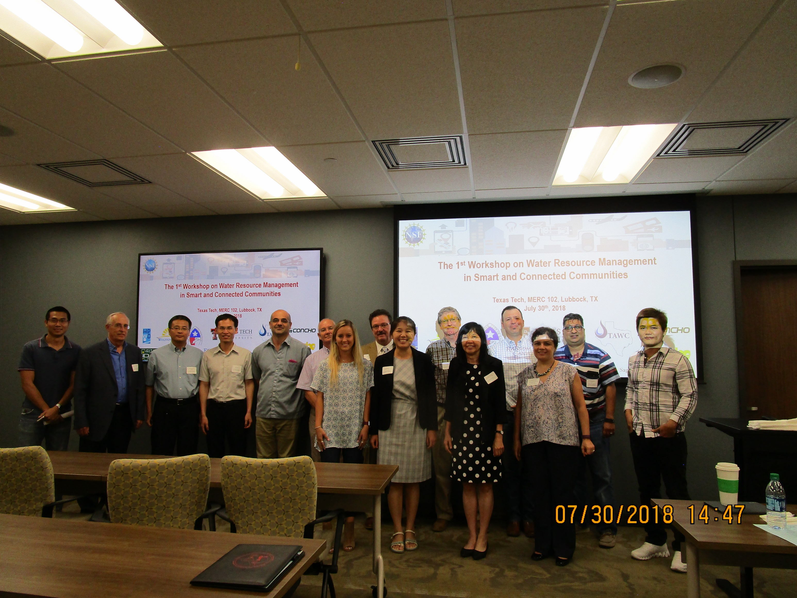

|
OBJECTIVE
Here is objective of this workshop
AGENDA
The 1st Workshop on Water Resource Management
in Smart and Connected Communities
9:00 AM – 3:30 PM, July 30th, 2018
Maddox Engineering Research Center 102, TTU, Lubbock.
| 8:30 - 9:00 AM |
|
Registration |
| 9:00 - 9:15 AM |
|
Welcome and the Vision of the College
Dr. Al sacco Jr., Dean of the Edward E. Whitarce Jr. College of Engineering, TTU
|
| 9:15 - 9:45 AM |
|
Objective of the Workshop, Introducing Participants & Team
Assistant Professor of Computer Science, TTU
|
| 9:45 – 10:30 AM |
|
Invited Presentation I: “Smarter Management of the Ogallala Aquier for Efficient Irrigation”
Dr. Chuck West, Professor of Plant and Soil Science, TTU
Dr. Wenxuan Guo, Assistant Professor of Plant and Soil Science, TTU
|
| 10:30 – 10:45 AM |
|
Break
|
| 10:45 – 11:15 AM |
|
Focus Group Discussion Results
Dr. Akbar Siami-Namin, Associate Professor of Computer Science, TTU
|
| 11:15 – 12:00 AM |
|
Invited Presentation II: “Hydraulic Fracturing & Water Use”
Mr. Ion Ispas, Associate Professor of Petroleum Engineering, TTU
|
| 12:00 – 1:00 PM |
|
Lunch Break
|
| 1:00 – 1:30 PM |
|
Demo: “Smart and Connected Water Resource Management via Social Media
and Community Engagement”
(slide)
Zhou Yang, PhD student, Department of Computer Science, TTU
|
| 1:30 – 2:15 PM |
|
Invited Presentation III: “Emerging Water Technology in a Small Town”
(slide)
Mr. Darrell Newsom, City Manager, City of Wolfforth Water Treatment Plant, TX
|
| 2:15 – 2:30 PM |
|
Break
|
| 2:30 – 3:15 PM |
|
Panel Discussion, "Making smarter water systems"
Panelist: Dr. Wenxuan Gua, Department of Plant and Soil Science, TTU;
Mr. Denny Bullard, Former Senior Vice-President, Pioneer Natural Resources;
Dr. Darrell Newsom, City Manager, City of Wolfforth Water Treatment Plant;
Ms. Victoria Whitehead, High Plains Underground Water Conservation District;
Moderators: Dr. Rattikorn Hewett, Professor of Computer Science, TTU
|
| 3:15 - 3:30 PM |
|
Wrap up
|
ACTIVITIES
Dr. Darrell discusses about "Emerging Water Technology in a Small Town"

Dr. Prof. Hewett discusses about making smarter water systems

Zhou Yang, PhD student presents the SSC Platform

Workshop participants

|
|